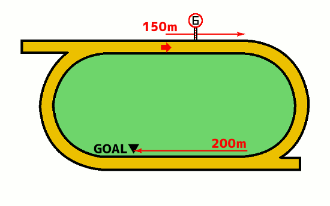

無料メルマガで連日の無料予想と秋G1の極秘情報もGETしよう!!
無料メルマガ登録フォーム
最終更新日：
YouTubeで登録者数6万人のうまめし競馬チャンネルを運営しているうまめし君です！
ここでは佐賀競馬の1750mコースの詳しい特徴や傾向、それから攻略法について考察していきましょう。佐賀競馬場の1750mはバックストレッチの丁度真ん中あたりからスタートして、馬場を1周半するコースレイアウトになっています。
もくじ
競馬場特徴の一覧に戻る
札幌 函館 福島 新潟 東京 中山 中京 京都 阪神 小倉 地方 海外
佐賀ダ1750mコースでの枠順と脚質別の成績を見ていきましょう。
1枠の成績は（1着14回・2着30回・3着29回・着外150回）で、勝率は6パーセント・連対率は19パーセント・複勝率は32パーセントとなっています。
脚質別の馬券に絡むパーセンテージは逃げ：46％・先行：34％・差し：27％・追込：23％となっております。
2枠の成績は（1着18回・2着25回・3着26回・着外154回）で、勝率は8パーセント・連対率は19パーセント・複勝率は30パーセントとなっています。
脚質別の馬券に絡むパーセンテージは逃げ：46％・先行：32％・差し：22％・追込：20％となっております。
3枠の成績は（1着26回・2着33回・3着17回・着外147回）で、勝率は11パーセント・連対率は26パーセント・複勝率は34パーセントとなっています。好枠 逃げ警戒 道悪実績
脚質別の馬券に絡むパーセンテージは逃げ：57％・先行：43％・差し：18％・追込：18％となっております。
4枠の成績は（1着23回・2着20回・3着21回・着外159回）で、勝率は10パーセント・連対率は19パーセント・複勝率は28パーセントとなっています。 逃げ警戒
脚質別の馬券に絡むパーセンテージは逃げ：51％・先行：33％・差し：20％・追込：17％となっております。
5枠の成績は（1着31回・2着17回・3着32回・着外190回）で、勝率は11パーセント・連対率は17パーセント・複勝率は29パーセントとなっています。好枠
脚質別の馬券に絡むパーセンテージは逃げ：32％・先行：34％・差し：28％・追込：18％となっております。
6枠の成績は（1着32回・2着26回・3着24回・着外246回）で、勝率は9パーセント・連対率は17パーセント・複勝率は25パーセントとなっています。
脚質別の馬券に絡むパーセンテージは逃げ：46％・先行：36％・差し：17％・追込：10％となっております。
7枠の成績は（1着40回・2着35回・3着40回・着外256回）で、勝率は10パーセント・連対率は20パーセント・複勝率は30パーセントとなっています。
脚質別の馬券に絡むパーセンテージは逃げ：42％・先行：43％・差し：24％・追込：11％となっております。
8枠の成績は（1着39回・2着37回・3着36回・着外293回）で、勝率は9パーセント・連対率は18パーセント・複勝率は27パーセントとなっています。 逃げ警戒 道悪実績
脚質別の馬券に絡むパーセンテージは逃げ：53％・先行：35％・差し：21％・追込：6％となっております。
下の表は枠を考慮しない脚質成績
| 逃げ | 先行 | 差し | 追込 | |
|---|---|---|---|---|
| 勝 率 | 20% | 12% | 5% | 5% |
| 連対率 | 38% | 24% | 13% | 8% |
| 複勝率 | 47% | 37% | 22% | 13% |
無料メルマガで連日の無料予想と秋G1の極秘情報もGETしよう!!
無料メルマガ登録フォーム

スタートから最初のコーナーまで150mとやや短めで、各馬コーナーに向けてインに早めに寄せて行きたいので、ポジション争いはスタートとダッシュが重要になります。
佐賀1750mは最初のコーナーまでの位置取りがレース結果に大きく影響するから、一見するとインコースを取りやすい1枠2枠あたりが有利かと思いきや、実際の統計データを見てみると、特に枠の内外によって大きな有利不利はなさそう。
ただし、1枠はやはりインコースの砂が深い佐賀競馬場という事もあって、外から寄せられやすいため、若干不利になる場面もありますね。
1750mもの距離になれば、短距離コースとは違ってそれなりにスタミナが要求されるので、逃げ馬の勝率は落ちそうなものですが、楽に逃げられる展開になると有利な傾向にありますよね。
無料メルマガで連日の無料予想と秋G1の極秘情報もGETしよう!!
無料メルマガ登録フォーム
佐賀ダ1750mコースでの人気別の成績を見ていきましょう。
1番人気の成績は（1着105回・2着44回・3着28回・着外46回）で、勝率は47パーセント・連対率は66パーセント・複勝率79パーセントとなっています。
脚質別の馬券に絡むパーセンテージは逃げ：85％・先行：79％・差し：73％・追込：90％となっております。
2番人気の成績は（1着42回・2着56回・3着35回・着外90回）で、勝率は18パーセント・連対率は43パーセント・複勝率59パーセントとなっています。
脚質別の馬券に絡むパーセンテージは逃げ：64％・先行：64％・差し：51％・追込：50％となっております。
3番人気の成績は（1着28回・2着37回・3着34回・着外124回）で、勝率は12パーセント・連対率は29パーセント・複勝率44パーセントとなっています。
脚質別の馬券に絡むパーセンテージは逃げ：58％・先行：45％・差し：40％・追込：26％となっております。
4番人気の成績は（1着19回・2着20回・3着45回・着外139回）で、勝率は8パーセント・連対率は17パーセント・複勝率37パーセントとなっています。
脚質別の馬券に絡むパーセンテージは逃げ：53％・先行：44％・差し：27％・追込：17％となっております。
5番人気の成績は（1着16回・2着17回・3着29回・着外160回）で、勝率は7パーセント・連対率は14パーセント・複勝率27パーセントとなっています。
脚質別の馬券に絡むパーセンテージは逃げ：32％・先行：31％・差し：20％・追込：31％となっております。
6番人気の成績は（1着7回・2着16回・3着14回・着外187回）で、勝率は3パーセント・連対率は10パーセント・複勝率16パーセントとなっています。
脚質別の馬券に絡むパーセンテージは逃げ：31％・先行：15％・差し：17％・追込：4％となっております。
7番人気の成績は（1着3回・2着15回・3着19回・着外178回）で、勝率は1パーセント・連対率は8パーセント・複勝率17パーセントとなっています。
脚質別の馬券に絡むパーセンテージは逃げ：27％・先行：24％・差し：14％・追込：3％となっております。
8番人気の成績は（1着0回・2着7回・3着9回・着外196回）で、勝率は0パーセント・連対率は3パーセント・複勝率7パーセントとなっています。
脚質別の馬券に絡むパーセンテージは逃げ：22％・先行：6％・差し：4％・追込：7％となっております。
佐賀競馬場の1750mの人気傾向を見てみると、オープンやAクラスからCクラスまで幅広いクラスで使用されるコースではあるものの、どのクラスでも安定して1番人気は40%以上の勝率を誇っています。
1番人気の7割か8割ぐらいは山口勲騎手や鮫島克也騎手が騎乗しているんですが、この両名だと1番人気の勝率は50%オーバーで、それ以外の騎手になると10%ぐらいは割引して考えた方が良さそうです。
また馬齢の視点から見てみると、1750mという距離は地方競馬では「やや長め」の距離設定になるためスタミナが必要になり、まだ未熟な2歳馬では単勝1番人気だと言ってもあまりアテに出来ません。
3歳ぐらいから走りきれるスタミナが備わり、4歳5歳がピークで、6歳を超えると衰退期に入って、また勝率の低下が見られます。
無料メルマガで連日の無料予想と秋G1の極秘情報もGETしよう!!
無料メルマガ登録フォーム
佐賀ダ1750コースでの騎手成績を詳細に見ていきましょう。
山口勲騎手の成績は37-25-26-65で、1~4番人気での成績は35-20-23-41で、5番人気以下の人気薄での騎乗成績は2-5-3-24でした。
飛田愛騎手の成績は29-19-26-87で、1~4番人気での成績は29-15-18-42で、5番人気以下の人気薄での騎乗成績は0-4-8-45でした。
石川慎騎手の成績は26-25-26-92で、1~4番人気での成績は24-20-20-36で、5番人気以下の人気薄での騎乗成績は2-5-6-56でした。
山田貴騎手の成績は18-14-12-88で、1~4番人気での成績は14-11-7-33で、5番人気以下の人気薄での騎乗成績は4-3-5-55でした。
竹吉徹騎手の成績は14-18-16-114で、1~4番人気での成績は11-10-7-29で、5番人気以下の人気薄での騎乗成績は3-8-9-85でした。
石川倭騎手の成績は14-8-5-18で、1~4番人気での成績は14-8-5-10で、5番人気以下の人気薄での騎乗成績は0-0-0-8でした。
出水拓騎手の成績は14-10-8-111で、1~4番人気での成績は13-5-6-20で、5番人気以下の人気薄での騎乗成績は1-5-2-91でした。
川島拓騎手の成績は10-20-17-95で、1~4番人気での成績は9-16-9-16で、5番人気以下の人気薄での騎乗成績は1-4-8-79でした。
金山昇騎手の成績は10-9-15-100で、1~4番人気での成績は8-5-9-21で、5番人気以下の人気薄での騎乗成績は2-4-6-79でした。
倉富隆騎手の成績は6-7-9-50で、1~4番人気での成績は4-5-7-15で、5番人気以下の人気薄での騎乗成績は2-2-2-35でした。
山下裕騎手の成績は6-10-11-84で、1~4番人気での成績は4-9-4-19で、5番人気以下の人気薄での騎乗成績は2-1-7-65でした。
加茂飛騎手の成績は6-12-3-71で、1~4番人気での成績は5-8-2-14で、5番人気以下の人気薄での騎乗成績は1-4-1-57でした。
小松丈騎手の成績は4-3-5-34で、1~4番人気での成績は3-0-2-5で、5番人気以下の人気薄での騎乗成績は1-3-3-29でした。
田中直騎手の成績は3-10-7-102で、1~4番人気での成績は2-7-6-19で、5番人気以下の人気薄での騎乗成績は1-3-1-83でした。
中山蓮騎手の成績は3-4-4-68で、1~4番人気での成績は1-2-1-13で、5番人気以下の人気薄での騎乗成績は2-2-3-55でした。
田中純騎手の成績は2-4-4-69で、1~4番人気での成績は2-3-3-13で、5番人気以下の人気薄での騎乗成績は0-1-1-56でした。
村松翔騎手の成績は2-2-5-39で、1~4番人気での成績は2-1-3-10で、5番人気以下の人気薄での騎乗成績は0-1-2-29でした。
小林凌騎手の成績は2-2-0-13で、1~4番人気での成績は1-0-0-1で、5番人気以下の人気薄での騎乗成績は1-2-0-12でした。
塚本征騎手の成績は1-0-0-0で、1~4番人気での成績は1-0-0-0で、5番人気以下の人気薄での騎乗成績は0-0-0-0でした。
長田進騎手の成績は1-4-6-80で、1~4番人気での成績は1-3-3-8で、5番人気以下の人気薄での騎乗成績は0-1-3-72でした。
大山真騎手の成績は1-0-0-0で、1~4番人気での成績は1-0-0-0で、5番人気以下の人気薄での騎乗成績は0-0-0-0でした。
赤岡修騎手の成績は1-0-0-0で、1~4番人気での成績は1-0-0-0で、5番人気以下の人気薄での騎乗成績は0-0-0-0でした。
青海大騎手の成績は1-3-4-63で、1~4番人気での成績は0-1-2-7で、5番人気以下の人気薄での騎乗成績は1-2-2-56でした。
松井伸騎手の成績は1-0-1-8で、1~4番人気での成績は1-0-0-1で、5番人気以下の人気薄での騎乗成績は0-0-1-7でした。
山本政騎手の成績は1-0-0-0で、1~4番人気での成績は1-0-0-0で、5番人気以下の人気薄での騎乗成績は0-0-0-0でした。
山田祥騎手の成績は1-0-0-0で、1~4番人気での成績は1-0-0-0で、5番人気以下の人気薄での騎乗成績は0-0-0-0でした。
宮内勇騎手の成績は1-0-0-3で、1~4番人気での成績は1-0-0-0で、5番人気以下の人気薄での騎乗成績は0-0-0-3でした。
吉本隆騎手の成績は1-0-1-11で、1~4番人気での成績は0-0-0-2で、5番人気以下の人気薄での騎乗成績は1-0-1-9でした。
関本玲騎手の成績は1-0-0-0で、1~4番人気での成績は0-0-0-0で、5番人気以下の人気薄での騎乗成績は1-0-0-0でした。
阿部龍騎手の成績は1-0-1-0で、1~4番人気での成績は1-0-1-0で、5番人気以下の人気薄での騎乗成績は0-0-0-0でした。
和田譲騎手の成績は0-0-0-1で、1~4番人気での成績は0-0-0-0で、5番人気以下の人気薄での騎乗成績は0-0-0-1でした。
鈴木祐騎手の成績は0-0-0-1で、1~4番人気での成績は0-0-0-0で、5番人気以下の人気薄での騎乗成績は0-0-0-1でした。
落合玄騎手の成績は0-1-0-1で、1~4番人気での成績は0-0-0-1で、5番人気以下の人気薄での騎乗成績は0-1-0-0でした。
野畑凌騎手の成績は0-0-0-2で、1~4番人気での成績は0-0-0-1で、5番人気以下の人気薄での騎乗成績は0-0-0-1でした。
本田重騎手の成績は0-1-0-0で、1~4番人気での成績は0-1-0-0で、5番人気以下の人気薄での騎乗成績は0-0-0-0でした。
服部茂騎手の成績は0-0-1-2で、1~4番人気での成績は0-0-0-0で、5番人気以下の人気薄での騎乗成績は0-0-1-2でした。
藤本現騎手の成績は0-0-0-1で、1~4番人気での成績は0-0-0-0で、5番人気以下の人気薄での騎乗成績は0-0-0-1でした。
渡邊竜騎手の成績は0-1-0-0で、1~4番人気での成績は0-1-0-0で、5番人気以下の人気薄での騎乗成績は0-0-0-0でした。
田野豊騎手の成績は0-0-0-1で、1~4番人気での成績は0-0-0-0で、5番人気以下の人気薄での騎乗成績は0-0-0-1でした。
的場文騎手の成績は0-0-0-1で、1~4番人気での成績は0-0-0-1で、5番人気以下の人気薄での騎乗成績は0-0-0-0でした。
長尾翼騎手の成績は0-0-0-4で、1~4番人気での成績は0-0-0-0で、5番人気以下の人気薄での騎乗成績は0-0-0-4でした。
中田貴騎手の成績は0-0-0-1で、1~4番人気での成績は0-0-0-1で、5番人気以下の人気薄での騎乗成績は0-0-0-0でした。
大坪慎騎手の成績は0-0-1-0で、1~4番人気での成績は0-0-0-0で、5番人気以下の人気薄での騎乗成績は0-0-1-0でした。
大山龍騎手の成績は0-0-0-1で、1~4番人気での成績は0-0-0-0で、5番人気以下の人気薄での騎乗成績は0-0-0-1でした。
多田誠騎手の成績は0-0-1-0で、1~4番人気での成績は0-0-1-0で、5番人気以下の人気薄での騎乗成績は0-0-0-0でした。
村上忍騎手の成績は0-0-0-1で、1~4番人気での成績は0-0-0-1で、5番人気以下の人気薄での騎乗成績は0-0-0-0でした。
川原正騎手の成績は0-0-0-1で、1~4番人気での成績は0-0-0-1で、5番人気以下の人気薄での騎乗成績は0-0-0-0でした。
西森将騎手の成績は0-1-1-9で、1~4番人気での成績は0-0-1-0で、5番人気以下の人気薄での騎乗成績は0-1-0-9でした。
菅原辰騎手の成績は0-0-0-1で、1~4番人気での成績は0-0-0-0で、5番人気以下の人気薄での騎乗成績は0-0-0-1でした。
杉浦健騎手の成績は0-1-0-0で、1~4番人気での成績は0-0-0-0で、5番人気以下の人気薄での騎乗成績は0-1-0-0でした。
松木大騎手の成績は0-0-1-0で、1~4番人気での成績は0-0-0-0で、5番人気以下の人気薄での騎乗成績は0-0-1-0でした。
小牧太騎手の成績は0-0-0-1で、1~4番人気での成績は0-0-0-0で、5番人気以下の人気薄での騎乗成績は0-0-0-1でした。
山本聡騎手の成績は0-0-0-2で、1~4番人気での成績は0-0-0-0で、5番人気以下の人気薄での騎乗成績は0-0-0-2でした。
山本咲騎手の成績は0-1-0-4で、1~4番人気での成績は0-1-0-1で、5番人気以下の人気薄での騎乗成績は0-0-0-3でした。
山崎雅騎手の成績は0-0-0-1で、1~4番人気での成績は0-0-0-0で、5番人気以下の人気薄での騎乗成績は0-0-0-1でした。
笹川翼騎手の成績は0-0-0-1で、1~4番人気での成績は0-0-0-0で、5番人気以下の人気薄での騎乗成績は0-0-0-1でした。
合林海騎手の成績は0-1-1-23で、1~4番人気での成績は0-0-0-1で、5番人気以下の人気薄での騎乗成績は0-1-1-22でした。
高橋悠騎手の成績は0-0-0-1で、1~4番人気での成績は0-0-0-0で、5番人気以下の人気薄での騎乗成績は0-0-0-1でした。
桑村真騎手の成績は0-0-0-2で、1~4番人気での成績は0-0-0-1で、5番人気以下の人気薄での騎乗成績は0-0-0-1でした。
宮下瞳騎手の成績は0-0-0-1で、1~4番人気での成績は0-0-0-1で、5番人気以下の人気薄での騎乗成績は0-0-0-0でした。
及川烈騎手の成績は0-0-2-8で、1~4番人気での成績は0-0-0-0で、5番人気以下の人気薄での騎乗成績は0-0-2-8でした。
吉村智騎手の成績は0-0-0-1で、1~4番人気での成績は0-0-0-1で、5番人気以下の人気薄での騎乗成績は0-0-0-0でした。
岩橋勇騎手の成績は0-0-0-1で、1~4番人気での成績は0-0-0-0で、5番人気以下の人気薄での騎乗成績は0-0-0-1でした。
丸野勝騎手の成績は0-0-0-1で、1~4番人気での成績は0-0-0-0で、5番人気以下の人気薄での騎乗成績は0-0-0-1でした。
鴨宮祥騎手の成績は0-0-0-1で、1~4番人気での成績は0-0-0-0で、5番人気以下の人気薄での騎乗成績は0-0-0-1でした。
下原理騎手の成績は0-0-0-1で、1~4番人気での成績は0-0-0-1で、5番人気以下の人気薄での騎乗成績は0-0-0-0でした。
井上幹騎手の成績は0-0-0-1で、1~4番人気での成績は0-0-0-0で、5番人気以下の人気薄での騎乗成績は0-0-0-1でした。
無料メルマガで連日の無料予想と秋G1の極秘情報もGETしよう!!
無料メルマガ登録フォーム
どの種牡馬の産駒がどの程度馬券に絡んでいるのか、種牡馬ごとに馬券に絡んだ回数をカウントしたのが以下の表です。血統の系統別に馬名を色分けしています。
■ヘイルトゥリーズン系
■サンデーサイレンス系
■ミスプロ系・キングマンボ系
■ノーザンダンサー系
■エーピーインディ系
| 種牡馬名 | 勝利回数 |
|---|---|
| ホッコータルマエ | 15 |
| ビーチパトロール | 9 |
| キズナ | 9 |
| マジェスティックウォリアー | 7 |
| ダノンレジェンド | 7 |
| ドレフォン | 6 |
| バンブーエール | 5 |
| コパノリッキー | 5 |
| キタサンブラック | 5 |
| ロージズインメイ | 4 |
| ヘニーヒューズ | 4 |
| タートルボウル | 4 |
| スワーヴリチャード | 4 |
| ケイムホーム | 4 |
| ヴィクトワールピサ | 3 |
| ワールドエース | 3 |
| リーチザクラウン | 3 |
| マクフィ | 3 |
| マインドユアビスケッツ | 3 |
| フリオーソ | 3 |
| 種牡馬名 | 勝利回数 |
|---|---|
| ホッコータルマエ | 15 |
| ビーチパトロール | 9 |
| キズナ | 9 |
| マジェスティックウォリアー | 7 |
| ダノンレジェンド | 7 |
| ドレフォン | 6 |
| バンブーエール | 5 |
| コパノリッキー | 5 |
| キタサンブラック | 5 |
| ロージズインメイ | 4 |
| ヘニーヒューズ | 4 |
| タートルボウル | 4 |
| スワーヴリチャード | 4 |
| ケイムホーム | 4 |
| ヴィクトワールピサ | 3 |
| ワールドエース | 3 |
| リーチザクラウン | 3 |
| マクフィ | 3 |
| マインドユアビスケッツ | 3 |
| フリオーソ | 3 |
| パイロ | 3 |
| バトルプラン | 3 |
| ハーツクライ | 3 |
| ディープブリランテ | 3 |
| ダノンシャンティ | 3 |
| スマートファルコン | 3 |
| エスケンデレヤ | 3 |
| アメリカンペイトリオット | 3 |
| アドマイヤムーン | 3 |
| ロジャーバローズ | 2 |
| ロードカナロア | 2 |
| レインボーライン | 2 |
| リアルインパクト | 2 |
| ラブリーデイ | 2 |
| マスクゾロ | 2 |
| ブリックスアンドモルタル | 2 |
| ネオユニヴァース | 2 |
| デクラレーションオブウォー | 2 |
| タリスマニック | 2 |
| ストロングリターン | 2 |
| シャンハイボビー | 2 |
| クリエイター２ | 2 |
| カレンブラックヒル | 2 |
| ウルトラカイザー | 2 |
| イスラボニータ | 2 |
| アポロキングダム | 2 |
| ヴァーミリアン | 1 |
| ロゴタイプ | 1 |
| レイデオロ | 1 |
| ルーラーシップ | 1 |
| リアルスティール | 1 |
| モズアスコット | 1 |
| モーリス | 1 |
| モーニン | 1 |
| ミュゼスルタン | 1 |
| ミッキーロケット | 1 |
| ポアゾンブラック | 1 |
| ベストウォーリア | 1 |
| ベーカバド | 1 |
| ブラックタイド | 1 |
| フェノーメノ | 1 |
| ファインニードル | 1 |
| ビッグアーサー | 1 |
| バゴ | 1 |
| ノヴェリスト | 1 |
| ニューイヤーズデイ | 1 |
| ドリームバレンチノ | 1 |
| ドリームジャーニー | 1 |
| ドゥラメンテ | 1 |
| トランセンド | 1 |
| トゥザワールド | 1 |
| トーセンラー | 1 |
| トーセンブライト | 1 |
| ダンカーク | 1 |
| ダブルスター | 1 |
| ダノンバラード | 1 |
| ダイワメジャー | 1 |
| タワーオブロンドン | 1 |
| ストーミングホーム | 1 |
| スズカコーズウェイ | 1 |
| ジョーカプチーノ | 1 |
| ジャングルポケット | 1 |
| ジャスタウェイ | 1 |
| シンボリクリスエス | 1 |
| シビルウォー | 1 |
| シニスターミニスター | 1 |
| サンカルロ | 1 |
| サトノアラジン | 1 |
| ゴールドシップ | 1 |
| ゴールドアリュール | 1 |
| ゴールデンバローズ | 1 |
| ケープブランコ | 1 |
| エスポワールシチー | 1 |
| エーシンモアオバー | 1 |
| アンライバルド | 1 |
| アドマイヤオーラ | 1 |
| アジアエクスプレス | 1 |
| アイルハヴアナザー | 1 |
| Constitution | 1 |
無料メルマガで連日の無料予想と秋G1の極秘情報もGETしよう!!
無料メルマガ登録フォーム
| 種牡馬名 | 勝利回数 |
|---|---|
| ホッコータルマエ | 7 |
| キズナ | 6 |
| マジェスティックウォリアー | 5 |
| ビーチパトロール | 5 |
| コパノリッキー | 5 |
| バンブーエール | 4 |
| ダノンレジェンド | 4 |
| ヴィクトワールピサ | 3 |
| ヘニーヒューズ | 3 |
| フリオーソ | 3 |
| タートルボウル | 3 |
| アメリカンペイトリオット | 3 |
| ワールドエース | 2 |
| リアルインパクト | 2 |
| マインドユアビスケッツ | 2 |
| ネオユニヴァース | 2 |
| デクラレーションオブウォー | 2 |
| ディープブリランテ | 2 |
| ダノンシャンティ | 2 |
| スワーヴリチャード | 2 |
| スマートファルコン | 2 |
| ケイムホーム | 2 |
| キタサンブラック | 2 |
| カレンブラックヒル | 2 |
| エスケンデレヤ | 2 |
| ヴァーミリアン | 1 |
| レイデオロ | 1 |
| リーチザクラウン | 1 |
| ラブリーデイ | 1 |
| モズアスコット | 1 |
| モーリス | 1 |
| ミュゼスルタン | 1 |
| ミッキーロケット | 1 |
| マスクゾロ | 1 |
| マクフィ | 1 |
| ポアゾンブラック | 1 |
| ブリックスアンドモルタル | 1 |
| ブラックタイド | 1 |
| フェノーメノ | 1 |
| ビッグアーサー | 1 |
| パイロ | 1 |
| バトルプラン | 1 |
| バゴ | 1 |
| ハーツクライ | 1 |
| ドレフォン | 1 |
| ドリームジャーニー | 1 |
| ドゥラメンテ | 1 |
| トーセンラー | 1 |
| ダブルスター | 1 |
| ダイワメジャー | 1 |
| タワーオブロンドン | 1 |
| タリスマニック | 1 |
| ストーミングホーム | 1 |
| ジャスタウェイ | 1 |
| シンボリクリスエス | 1 |
| シャンハイボビー | 1 |
| シビルウォー | 1 |
| シニスターミニスター | 1 |
| サンカルロ | 1 |
| サトノアラジン | 1 |
| ゴールドシップ | 1 |
| ゴールドアリュール | 1 |
| ゴールデンバローズ | 1 |
| ケープブランコ | 1 |
| クリエイター２ | 1 |
| エスポワールシチー | 1 |
| エーシンモアオバー | 1 |
| ウルトラカイザー | 1 |
| アポロキングダム | 1 |
| アドマイヤムーン | 1 |
| アドマイヤオーラ | 1 |
| アジアエクスプレス | 1 |
| アイルハヴアナザー | 1 |
| Constitution | 1 |
無料メルマガで連日の無料予想と秋G1の極秘情報もGETしよう!!
無料メルマガ登録フォーム
※当ページへのリンクや、論文・SNSでの紹介などは大歓迎です。単なるコピペパクリなど引用の法的要件を満たさない記事泥棒的な転載は禁止です。